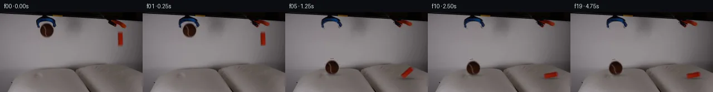

![首帧]()

Round 00
2026-11-04T16:48:58.447381+00:00像素候选变化代码 +252/−0inspection 更新
pixels aa1fff820c32b245 · code fbf3603b96c69308
查看本轮 generate.py 真实 diff
--- previous/generate.py
+++ current/generate.py
@@ -0,0 +1,252 @@
+"""Deterministic continuation using only the supplied photograph and local pixel operations."""
+from pathlib import Path
+import json
+import math
+import numpy as np
+import cv2
+from PIL import Image, ImageDraw
+from scipy.special import erf
+from artifact_io import save
+
+ROOT = Path(__file__).resolve().parent
+SOURCE = np.asarray(Image.open(ROOT / 'first_frame.png').convert('RGB'))
+H, W = SOURCE.shape[:2]
+YY, XX = np.mgrid[:H, :W].astype(np.float32)
+SRC = SOURCE.astype(np.float32)
+
+
+def polygon(points, sigma=0.5):
+ scale = 4
+ m = np.zeros((H * scale, W * scale), np.uint8)
+ p = np.round(np.asarray(points) * scale).astype(np.int32)
+ cv2.fillPoly(m, [p], 255)
+ m = cv2.resize(m.astype(np.float32) / 255, (W, H), interpolation=cv2.INTER_AREA)
+ return cv2.GaussianBlur(m, (0, 0), sigma) if sigma else m
+
+
+def row_background(xleft, xright):
+ """Smooth wall estimate interpolated between two clear vertical strips."""
+ l = np.median(SRC[:, xleft-1:xleft+2], axis=1)
+ r = np.median(SRC[:, xright-1:xright+2], axis=1)
+ l = cv2.GaussianBlur(l[:, None, :], (1, 5), 0.7)[:, 0]
+ r = cv2.GaussianBlur(r[:, None, :], (1, 5), 0.7)[:, 0]
+ fraction = np.clip((XX - xleft) / (xright - xleft), 0, 1)
+ return l[:, None] * (1 - fraction[..., None]) + r[:, None] * fraction[..., None]
+
+BALL_BG = row_background(61, 107)
+BLOCK_BG = row_background(207, 225)
+TOOL_BG = row_background(61, 105)
+RIGHT_BG = row_background(192, 235)
+
+
+def make_sprite(alpha, bg):
+ alpha = np.clip(alpha, 0, 1).astype(np.float32)
+ pm = np.clip(SRC - bg * (1 - alpha[..., None]), 0, 255)
+ pm *= (alpha > 0.0005)[..., None]
+ return pm, alpha
+
+# Analytic soft silhouettes retain the original seam, texture, and defocus.
+rho = np.sqrt(((XX - 84.2) / 12.1)**2 + ((YY - 32.4) / 12.55)**2)
+ball_shape = 0.5 * (1 + erf((1-rho) * 12.1 / (math.sqrt(2) * 1.08)))
+contrast = np.clip(1 - np.min(SRC / np.maximum(BALL_BG, 1), axis=2), 0, 1)
+ball_alpha = np.maximum(ball_shape, contrast) * (rho < 1.34)
+blue = (SRC[..., 2] > SRC[..., 0] + 12) & (SRC[..., 2] > SRC[..., 1] + 9)
+ball_alpha[blue & (YY < 29)] = 0
+ball_alpha[ball_alpha < 0.005] = 0
+BALL = make_sprite(ball_alpha, BALL_BG)
+
+block_shape = polygon([(213.1, 36.0), (218.8, 36.1), (219.9, 58.6), (213.2, 59.1)], 0.9)
+block_region = (XX > 209) & (XX < 223) & (YY > 32) & (YY < 64)
+contrast = np.clip(1 - np.min(SRC / np.maximum(BLOCK_BG, 1), axis=2), 0, 1)
+block_alpha = np.maximum(block_shape, contrast * (block_shape > 0.015)) * block_region
+block_alpha[block_alpha < 0.005] = 0
+BLOCK = make_sprite(block_alpha, BLOCK_BG)
+
+
+def jaw(points, bg):
+ shape = polygon(points, 0.4)
+ # Tool pixels are dark or saturated; the surrounding neutral wall is excluded.
+ a = np.clip((bg[..., 1] - SRC[..., 1] - 2) / np.maximum(bg[..., 1] - 21, 1), 0, 1)
+ a = np.minimum(shape, a)
+ a[a < 0.015] = 0
+ return make_sprite(a, bg)
+
+LEFT_JAW = jaw([(65,17),(72,17),(74,19),(72,23),(73,29),(66,30),(64,23)], TOOL_BG)
+RIGHT_JAW = jaw([(93,17),(98,17),(101,23),(103,28),(98,30),(94,28),(93,22)], TOOL_BG)
+ORANGE_JAW = jaw([(201,16),(213,16),(229,22),(229,29),(222,30),(211,25),(205,21)], RIGHT_BG)
+LOWER_JAW = jaw([(196,16),(202,18),(208,21),(213,24),(210,28),(203,26),(198,22)], RIGHT_BG)
+
+# Repair only pixels hidden by the moving objects/finger tips, retaining the rest verbatim.
+clean = SRC.copy()
+for obj, bg, dilation in [(BALL, BALL_BG, 2), (BLOCK, BLOCK_BG, 2)]:
+ region = cv2.dilate((obj[1] > 0.008).astype(np.uint8), np.ones((dilation*2+1, dilation*2+1),np.uint8))
+ if obj is BALL:
+ region[blue & (YY < 30)] = 0
+ region[YY < 18] = 0
+ m = cv2.GaussianBlur(region.astype(np.float32), (0,0), 0.55)
+ clean = clean * (1-m[...,None]) + bg * m[...,None]
… diff truncated; 165 more lines …